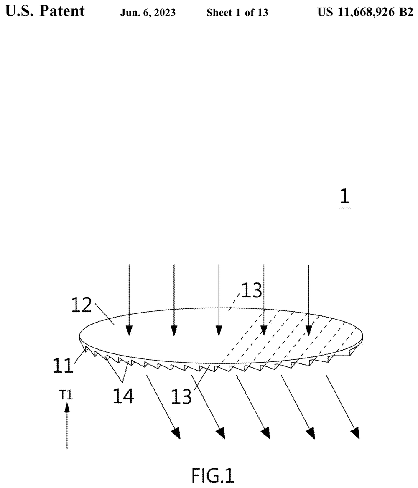

Scientific thinking, data systems, and AI-ready problem solving.
I turn complex, imperfect data into interpretable, reproducible results. A decade of PhD and industry experience — from multi-terabyte X-ray astronomy datasets to large-scale metadata pipelines and AI-optimised optics — taught me to combine statistical rigour with clean, automated, well-documented workflows.
Transferable strengths
From scientific datasets to intelligent technical systems
Statistical reasoning
Regression, classification, clustering, Bayesian inference, and time-series on real, noisy data.
Python automation
Reproducible workflows replacing manual steps with scripted, version-controlled pipelines.
Technical documentation
Clear validation procedures, provenance, and onboarding material for analysts and stakeholders.
Experimental & instrument data
Systems thinking from instrumentation, QC/testing, and observatory data environments.
Research → product
Translating complex analysis into interpretable, actionable technical results.
Interdisciplinary range
Transferable skills across physics, astronomy, engineering, and industry data work.
Solar-AI & optics innovation
AI-optimised solar light-guide systems
Co-inventor on granted patents applying AI/optimisation to optical light-guide systems for solar energy capture — combining optical physics with data-driven design. Patent numbers (verifiable identifiers): US 11,668,926 B2, TW 109125878, TW 110124889.
Patent titles vary across source documents, so numbers are shown as the authoritative reference. The diagram on the home and hero panels is an original abstract illustration of the theme (sunlight → light guide → AI optimisation → energy/data loop), not a confidential system schematic.
- Optical physics
- Light-guiding
- AI optimisation
- Energy capture

Featured projects
Public-safe project work
Reproducible X-ray data pipelines Ongoing
Scripted, provenance-tracked pipelines that ingest large astronomical datasets, detect and measure sources, and produce reproducible statistical outputs — framed as data engineering; unpublished science excluded.
- Python
- NumPy/SciPy
- Git
- Linux
AI-optimised solar light-guide Patented
Co-inventor on patents combining AI/optimisation with optical light-guide design for solar energy capture.
- Optics
- AI design
- Energy
Large-scale metadata analytics Industry
As Senior Data Analyst (HCL Technologies, Poland, 2022) delivered metadata quality and data validation for a large product-catalog project, and authored documentation that reduced data error rates.
- SQL
- Data validation
- Metadata
Open profile & portfolio site Live
This static, dependency-free site and an open GitHub profile — built for accessibility, performance, and reproducibility.
- HTML/CSS
- Vanilla JS
- GitHub Pages
Experience & impact
Where I've applied this
2026 →
Innovation & Ecosystem Associate
PPyrus India — data validation & metadata workflows
2025–26
QC / Systems Testing
Wistron, Taiwan — PCB verification, structured QC data
2024–25
Optomechanical Eng. Intern
Vacatronics — optical-filter data, Class-100 cleanroom
2022
Senior Data Analyst
HCL Technologies, Poland — metadata analytics
2016–24
Doctoral & postdoctoral researcher
Python spectral pipelines on multi-TB X-ray data
Outcomes described qualitatively from verified CV experience; no invented business metrics.
Skills & tools
Toolbox
Data
- Pandas
- NumPy
- SciPy
- Matplotlib
- Seaborn
- Plotly
Software
- Python
- Git/GitHub
- Linux
- C/C++
- Docker (basic)
Databases
- PostgreSQL
- MySQL
- SQL (basic)
Research
- Statistical modelling
- Bayesian
- Time-series
- XSPEC
- ROOT
AI/ML
- scikit-learn
- Regression
- Classification
- Clustering
Levels reflect my CV: Python intermediate; SQL/R/Tableau/Docker basic; ML foundations via scikit-learn and statistical modelling.
Career focus & availability
Let's talk data, software, and AI
- Data Analyst
- Research Data Scientist
- Scientific Software / Research Engineer
- AI / Data Associate
- Technical R&D / Analytics
CV download enabled once a public, contact-redacted PDF is provided.